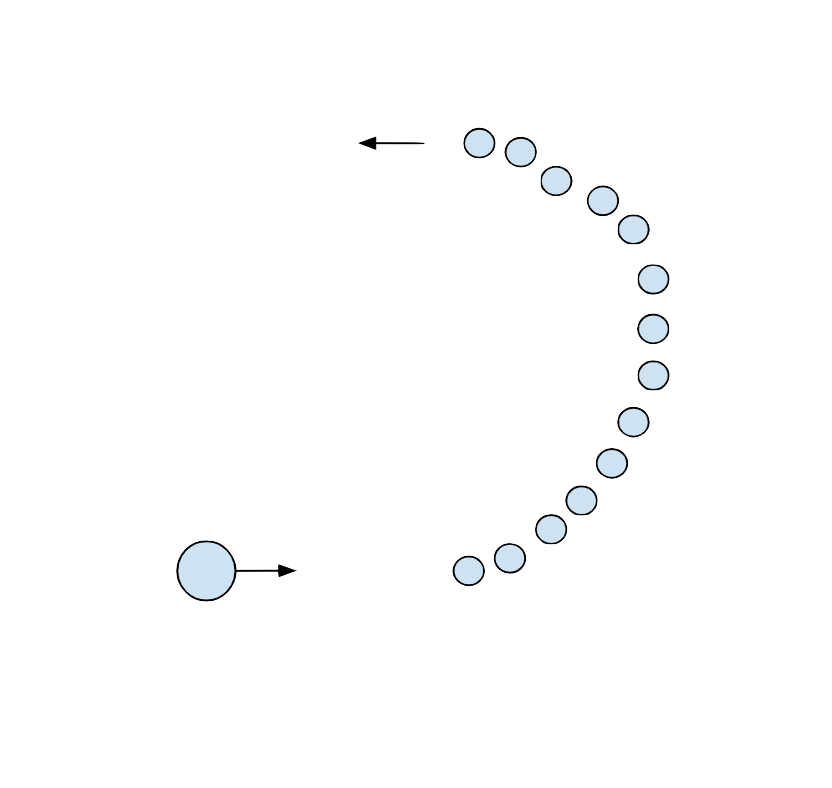
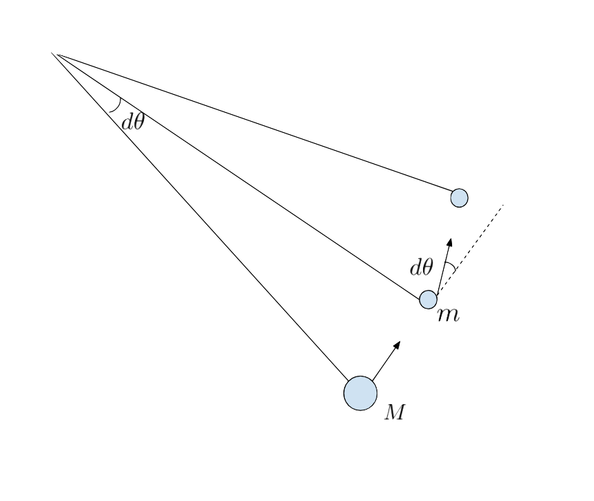

Morin Introduction to Classical Mechanics: Chapter 5 Problem 87
In this problem, we are asked to consider a semi-circle of $N$ equally-spaced balls, with total mass $M$ equally distributed between the balls. We then consider a ball of mass
$m$ coming in from the left, it's velocity directed towards the first ball in the semicircle. This setup will look something like this:

My apologies for the terrible drawing, but you get the idea. We are interested in the case where $N \ \rightarrow \ \infty$, so the mass of each ball, $\frac{M}{N}$ approaches $0$. Specifically,
we want to find the minimum possible ratio $\frac{M}{m}$ such that the ball moves into the semi-circular ring, collides with every ball, and exits the ring by moving directly to the left.
This is actually not too difficult if we use the results of a previous question, which says that the maximum angle of deflection that a moving ball can make with another ball stationary
ball after an elastic collision is given by:
$$\sin^{-1} \Big( \frac{m_2}{m_1} \Big)$$
Where $m_1$ is the mass that is initally moving, and $m_2$ is the mass that is initially stationary. We wish to minimize $\frac{M}{m}$.
Consider what happens when we consider this setup on the infinitesimal level:

Since each portion of the circle between masses is subtended by an infinitesimally small angle, we can treat it as a triangle. Doing some simple
trigonometry, we find that the angle of deflection of the mass after it collides with one of the masses in the semicircle is equal to the subtending
angle, which is $d\theta$.
Now that we know what the angle of deflection has to be, let's consider the masses themsleves. In the collision shown in the diagram, the mass
$m$ collides with another ball of mass $\frac{M}{N}$. For a collision between these two masses, the maximum possible angle of deflection for an ellastic collision is given
by $\sin^{-1} (M / Nm)$. As we make $M/Nm$ smaller, it follows that the
maximum possible angle of deflection gets smaller (since on the interval $[0, 1]$, the inverse sine
function is strictly increasing). We wish to make $M/Nm$ as small as we possible can while still ensuring the angle of deflection can be equal to $d\theta$. It
follows that this smallest ratio is acheived when we set the maximum angle of deflection (for this smallest ratio), equal to $d\theta$, as if we chose
a ratio smaller than this, the maximum possible deflection angle would be too small, making any other possible deflection angle too small as well. With
this knowledge, we get:
$$\sin^{-1} \Big( \frac{M}{nm} \Big) \ = \ d\theta$$
We write $M/n$ as $dm'$, as $N \ \rightarrow \ \infty$, thus we can rewrite and simplify to the first-order:
$$m dm' \ = \ d\theta \ \Rightarrow \ \frac{d \theta}{d m'} \ = \ m$$
Since the mass $M$ is equally distributed across the semicircle ($\pi$ radians) is follows that:
$$\frac{dm'}{d\theta} \ = \ \frac{M}{\pi}$$
Which gives us:
$$\frac{M}{\pi} \ = \ m \ \Rightarrow \ \frac{M}{m} \ = \ \pi$$
Thus, the minimum possible ratio of masses turns out to be $\pi$!
Now that we have found the minimum possible ratio $\frac{M}{m}$, we can turn our attention to finding the ratio of velocities
of the ball as it enters and exits the semi-circular ring of balls. Specifically, we have to show that the ratio of final speed to initial speed is equal to
$e^{-\pi}$. The solution, as it turns out, is quite slick and involves conserving momentum and energy on a infinitesimal scale, for each collision. Consider
the case in which our ball of mass $m$ is approaching some given ball in the semicircle. Let its initial velocity, before the collision be $v$. Since the mass
of each ball is approaching $0$, it follows that the final velocity only changes very slightly. We can approximate this to the first order as $v \ + \ dv$, where
$dv$ is a very small change in velocity. Since energy is conserved in each collision, we will have:
$$\frac{1}{2} mv^2 \ = \ \frac{1}{2} m (v \ + \ dv)^2 \ + \ \frac{1}{2} (dm') u^2$$
$$\Rightarrow \ mv^2 \ = \ mv^2 \ + \ 2mv (dv) \ + \ (dm') u^2 \ \Rightarrow \ -2mv(dv) \ = \ (dm') u^2$$
Where we got rid of the second-order terms. Now, let's conserve momentum in both directions. For the horizontal direction, we will have:
$$mv \ = \ m(v \ + \ dv) \cos (d\theta) \ + \ (dm') u \cos \phi$$
$$m(v \ + \ dv) \sin (d\theta) \ = \ (dm') u \sin \phi$$
We will now expand the trigonometric functions of small angles to the first order, and get rid of any second-order terms that arrive after:
$$mv \ = \ m(v \ + \ dv) \ + \ (dm') u \cos \phi \ \Rightarrow \ -m dv \ = \ (dm') u \cos \phi \ \Rightarrow \ u \cos \phi \ = \ -m \frac{dv}{dm'}$$
$$mv d\theta \ = \ (dm') u \sin \phi \ \Rightarrow \ u \sin \phi \ = \ mv \frac{d\theta}{dm'}$$
Finally, we can combine these two equations together to get the total magnitude of the velocity:
$$u^2 \ = \ u^2 \sin^2 \phi \ + \ u^2 \cos^2 \phi \ = \ m^2 \Big( \frac{dv}{dm'} \Big)^2 \ + \ m^2 v^2 \Big( \frac{d\theta}{dm'} \Big)^2$$
Now, let's rearrange our original conservation of energy equation, and plug in this result to get:
$$-2v \frac{dv}{dm'} \ = \ m \Big( \frac{dv}{dm'} \Big)^2 \ + \ m v^2 \Big( \frac{d\theta}{dm'} \Big)^2$$
We now have a not-so-nice differential equation to work with. Let's first see if we can simplify it a bit by rewritting the derivatives
in terms of different variables. We know that:
$$\frac{dm'}{d\theta} \ = \ \frac{M}{\pi}$$
Since we have total mass $M$, spread out uniformlly over $\pi$ radians. We also know that by chain rule we have:
$$\frac{dv}{dm'} \ = \ \frac{dv}{d\theta} \frac{d\theta}{dm'}$$
Thus, our differential equation becomes:
$$-2v \frac{dv}{d\theta} \frac{d\theta}{dm'} \ = \ m \Big( \frac{dv}{d\theta} \frac{d\theta}{dm'} \Big)^2 \ + \ m v^2 \Big( \frac{d\theta}{dm'} \Big)^2$$
$$\Rightarrow \ -2v \frac{dv}{d\theta} \frac{\pi}{M} \ = \ m \Big( \frac{dv}{d\theta} \frac{\pi}{M} \Big)^2 \ + \ m v^2 \Big( \frac{\pi}{M} \Big)^2 \ \Rightarrow \
-2v \frac{dv}{d\theta} \ = \ \frac{\pi m}{M} \Big( \frac{dv}{d\theta} \Big)^2 \ + \ \frac{\pi m}{M} v^2$$
Now, recall that we are solving this problem for the case of $\frac{M}{m} \ = \ \pi$, thus our differential equation can be simplified further:
$$-2v \frac{dv}{d\theta} \ = \ \Big( \frac{dv}{d\theta} \Big)^2 \ + \ v^2$$
One could probably solve this differential equation in a more nuanced way, but we are going to take the easy route and guess a solution of the form
$v \ = \ Ae^{b\theta}$. We then plug this into the differential equation:
$$-2A^2 e^{b\theta} \frac{d}{d\theta} e^{b\theta} \ = \ A^2 \Big( \frac{d}{d\theta} e^{b\theta} \Big)^2 \ + \ A^2 e^{2b\theta}$$
$$\Rightarrow \ -2 b e^{2 b\theta} \ = \ b^2 e^{2b\theta} \ + \ e^{2b\theta} \ \Rightarrow \ b^2 \ + \ 2b \ + \ 1 \ = \ 0$$
$$\Rightarrow \ (b \ + \ 1)^2 \ = \ 0 \ \Rightarrow \ b \ = \ -1$$
Thus, $v \ = \ Ae^{b\theta}$ is a solution to the differential equation for $b \ = \ -1$, so we have:
$$v(\theta) \ = \ Ae^{-\theta}$$
Finally, we solve for $A$ by simply noting that at $\theta \ = \ 0$, the speed of the ball must be $v_0$ (the initial velocity of the mass), thus we have:
$$v(\theta) \ = \ v_0 e^{-\theta}$$
Finally, we note that the final speed of the ball will be calculated as it leaves the semicircle at $\pi$ radians, so the ratio of final to initial velocity is given as:
$$\frac{v(\theta)}{v_0} \ = \ \frac{v_0 e^{- \pi}}{v_0} \ = \ e^{-\pi}$$
This concludes the proof!